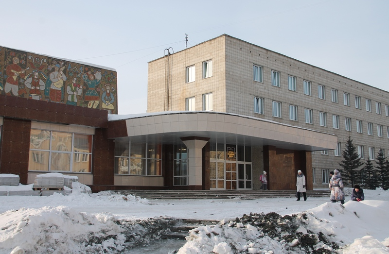

Музыкальная школа
(ДМШ), муниципальное бюджетное учреждение дополнительного образования детей. Открыта в 1952. Первоначально располагалась в двух комнатах жилого дома, затем получила отдельное здание. В 1972 переведена в специализированное 4-этажное здание с концертным залом на 500 мест. В 1989 открыт филиал в пос. Горном. Директора школы: В.Л. Кукушкин, С.В. Шуховцев, Н.К. Улыбушева, Е.В. Молодоженцева, В.С. Леонтьев, В.М. Савкин, О.В. Красулина (с 2002). В ДМШ обучаются 550 учащихся по 16 специальностям на семи отделениях (фортепианное, народных инструментов, оркестровое, эстрадное, хорового и сольного пения, фольклорного искусства). В школе работают 62 преподавателя (2012), среди которых два заслуженных работника культуры РФ - Е.В. Цибульская и Н.В. Шлыкова, четыре преподавателя награждены нагрудным знаком министерства культуры РФ «За высокие достижения»: Л.В. Петрова, Г.И. Новикова, Е.А. Коваленко, О.В. Красулина.
В школе созданы творческие коллективы: ансамбли скрипачей «Тутти» (руководитель заслуженный работник культуры РФ Е.В. Цибульская) и «Аркетто» (руководитель Т.М. Шалимова); оркестр народных инструментов «Уральский перезвон» и камерный оркестр «Камертон» (руководитель заслуженный работник культуры РФ Н.В. Шлыкова); 3 ансамбля народной песни: «Ваталинка», «Ваталиночка», «Горлинка» (руководитель Л.П. Бровкина); 2 вокальных эстрадных ансамбля: «Апельсин» и «Лимерики» (руководитель Е.В. Сахарова); вокальный ансамбль «Экспромт» (руководитель Т.В. Карепина); 3 хора: «Гармония» (руководитель Т.В. Карепина), «Акварели», «Капельки» (руководители: В.П. Никитина, Т.Ю. Глухих); фортепианный дуэт (в составе М. Вишнякова и П. Красулина, преподаватель Е.А. Коваленко); 2 педагогических ансамбля: «Карусель» и «Каприс» (руководитель И.Е. Степановская). Поставлены 3 детские оперы: «Однажды в музыкальном королевстве», «Цокотуха», «Айболит» (автор — преподаватель по классу фортепиано В.Н. Вишняков).
Среди выпускников ДМШ: заслуженная артистка России, солистка Большого театра Л.Б. Рудакова (сопрано), заслуженная артистка России, солистка Ростовской филармонии Н.А. Карапетьян (меццосопрано), лауреат международных конкурсов, солист Москонцерта К.А. Мережников (альт), артист оркестра «Русская филармония» (Германия) П.Л. Дельнов (альт), лауреат международных конкурсов, преподаватель Санкт-Петербургской консерватории Т.В. Брижанёва (фортепиано), лауреат международных конкурсов Н.С. Абросимов (фортепиано), (США), артист московского камерного оркестра «MUSICA VIVA» Л.П. Казаков (скрипка).
Воспитанники и педагоги ДМШ - неоднократные победители областных, всероссийских и международных конкурсов и фестивалей: «Таланты XXI века» (Москва, 2004), «Метелица» (Санкт-Петербург, 2004);
«Лето в Италии» (Италия, 2005), «Друзья Болгарии» (Албена, Болгария, 2006, 2008, 2010), «Езерскибисери» (Струга, Македония, 2005), «Северная лира» (Санкт-Петербург, 2009), «Кубок Европы» (Минск, 2010), «Парижские звезды» (Франция, 2011), «Праздник времени» (Чехия, 2011), «Будущее планеты», «Северная Венеция» (Санкт-Петербург, 2011, 2012) и многих др.
О.В. Красулина